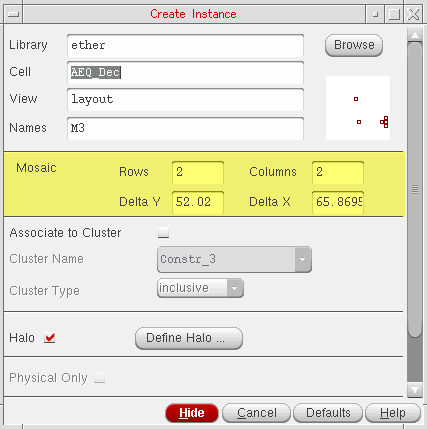
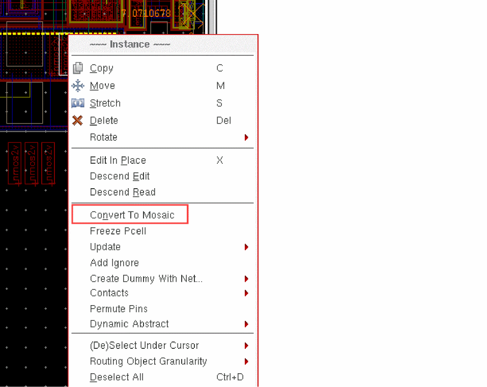
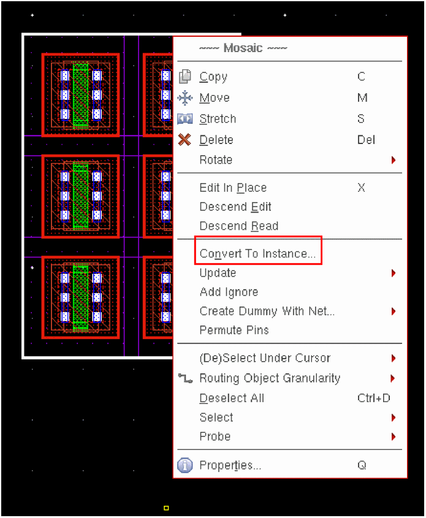

Creating a Mosaic Instance
You can create a mosaic in Layout XL using one of the following methods:
-
Using the Create Instance form.
 -
Using the Convert To Mosaic command from the Instance shortcut menu.
To display the Convert To Mosaic command in the Instance shortcut menu, right-click the instance in the layout canvas.
 -
Using the Edit – Convert – To Mosaic command.
Select the layout instance in the canvas or the Navigator assistant and choose the command. - By generating a mosaic array in the layout view based on the instances selected in the schematic view.
Irrespective of the method that you use for creating a mosaic instance, you can convert the mosaic instance back into a regular layout instance by using the Convert To Instance command. Any existing bindings and connectivity on the mosaic are retained during the conversion.
The Convert To Instance command is available in the shortcut menu of a mosaic, as displayed in the figure below, when it is right-clicked in the layout canvas.

Related Topics
Return to top